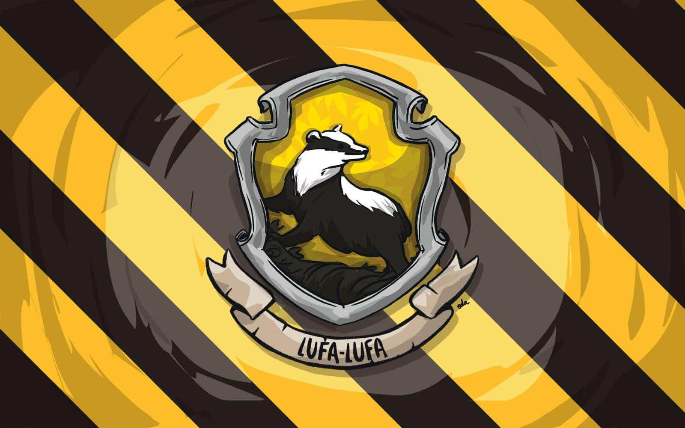
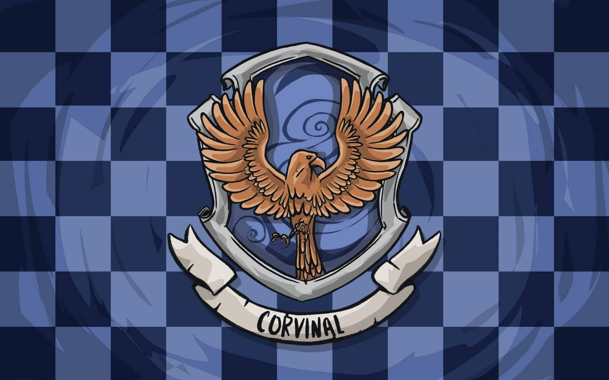
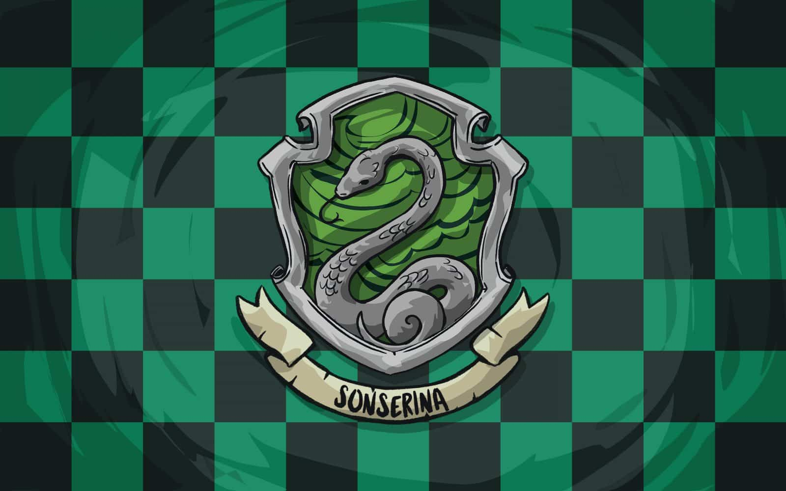

As Quatro Casas de Hogwarts
Grifinória

Lar dos bravos e cavalheiros, o símbolo da Grifinória apresenta em seu estandarte um orgulhoso leão, acompanhado das cores vermelha e amarelo-dourada. A Casa valoriza feitos de coragem e superação pessoal que costumam ser realizados por altruísmo. Seus estudantes tendem a ser bastante aventureiros, mas se destacam, sobretudo, pela lealdade.
Lufa Lufa

Os estudantes da Lufa-Lufa são dedicados, pacientes e honestos. Suas admiráveis características os tornam trabalhadores árduos e modestos, sendo receptivos a todos os demais tipos de bruxos.
Corvinal

Os bruxos pertencentes à Corvinal se destacam por sua exímia inteligência. Nesse contexto, suas principais características são relacionadas a sabedoria, criatividade e personalidade única, o que garante a eles certa excentricidade. Contudo, a valorização exacerbada do academicismo pode torná-los perfeccionistas, frios, insensíveis e demasiadamente críticos em relação às outras Casas.
Sonserina

Os membros da Sonserina têm como características, sobretudo, a ambição e a busca pela grandeza. Por isso estão sempre se dedicando a alcançar e expandir metas e se empenhando com inteligência em diversas áreas da magia. Por outro lado, essas qualidades podem promover um senso de competição muito aflorado, o que os torna presunçosos e egoístas.